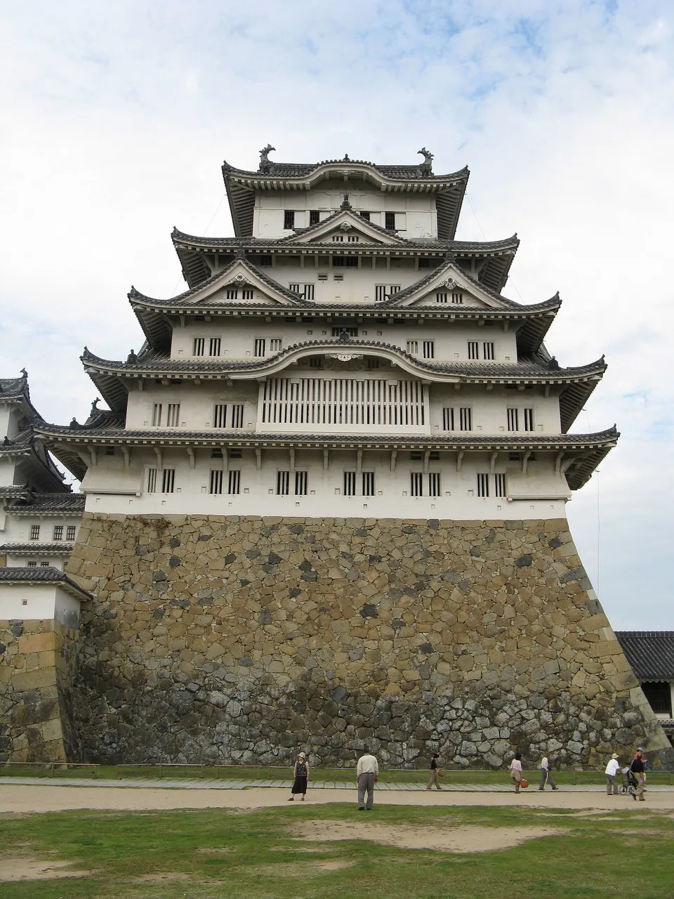
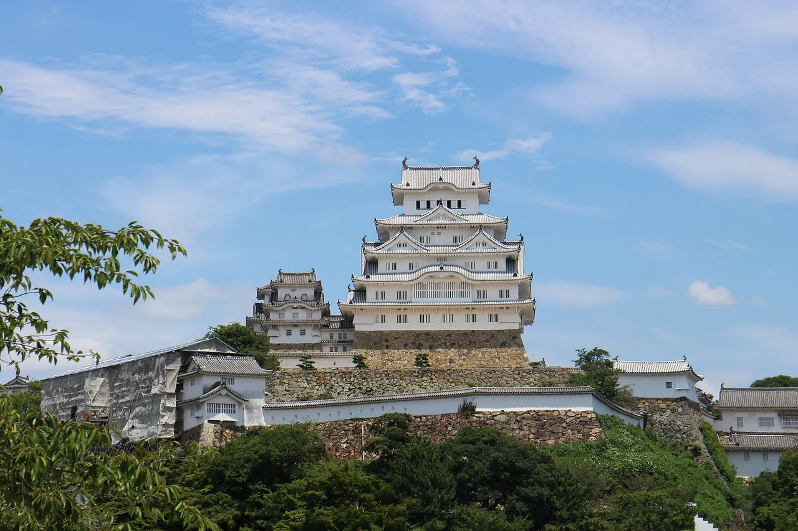
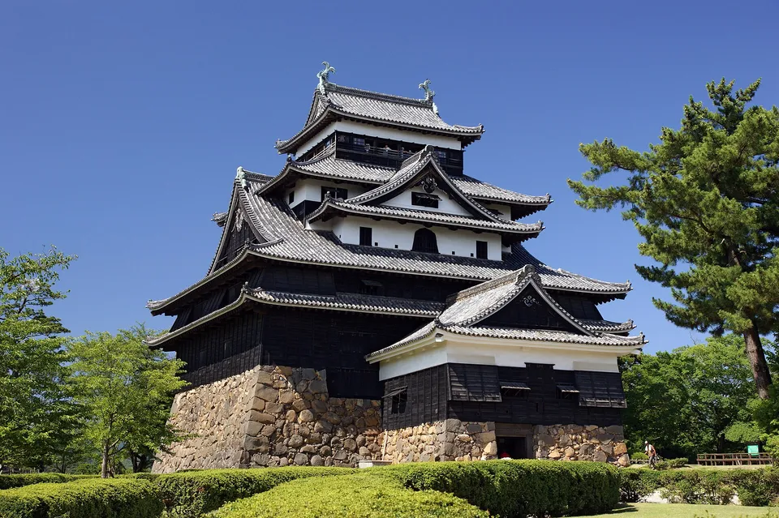

Japan's 100 Famous Castles & gojoin: the stamp-rally and seal guide
Two different things get tangled together whenever travellers talk about "castle stamps" in Japan. One is the 100 Famous Castles stamp rally — a free ink stamp you press into an official book at each castle. The other is gojoin (御城印), a paid paper seal-sheet you buy as a souvenir. They look related but are run by different people, cost different amounts, and exist for different reasons. This guide keeps them strictly apart, walks through both official "100 Castles" lists (200 castles in total), and ends at the strongest hook of all: the twelve castles that still have a genuine pre-modern keep.

The two official "100 Famous Castles" lists (200 in total)
The 100 Famous Castles of Japan (日本100名城) is a list selected by the Japan Castle Association (公益財団法人日本城郭協会). It was certified on 6 April 2006 — "Castle Day" (城の日), a play on the numbers 4-6 reading like shiro (城). A decade later the Association added a second tier, the Continued 100 Famous Castles (続日本100名城), announced in 2017. Together they make 200 castles, and the two lists between them touch all 47 prefectures.

An important point that trips up first-timers: these castles were chosen for heritage, historical, and regional value — not for being the prettiest. Several of Japan's most photogenic, tourist-famous castles share the list with quiet hilltop stone foundations that most visitors would walk past. The "Continued 100" was created partly to recognise sites that lost out narrowly in 2006 and to spread coverage more evenly across the country.
How the stamp rally works
The official stamp rally turns visiting all 200 castles into a long, structured collecting game. The first-100 rally launched on 2 June 2007; the continued-100 rally followed in 2018. The mechanics are the same for both:
- Get the official stamp book. It is sold bundled with the Association's official guidebook (published by Gakken / One Publishing). The book has a numbered page for each castle.
- Press the free stamp at each castle. Every site has a designated FREE ink stamp — usually at the ticket office, management building, or a nearby information desk. You press it into the matching page yourself. There is no charge for the stamp.
- Complete the list, then mail the book in. Once all 100 stamps of a list are collected, you send the book to the Japan Castle Association. They add a completion seal (登城完了印) and assign you a completion ranking number. The two lists complete separately, so you can finish the first 100 without touching the continued 100.
The Association is explicit about the spirit of the rally: it is meant to encourage people to actually visit "on foot" and keep the book as a record of the journey — not simply to amass stamps. In other words, the stamp is a memento of a real visit, not the point in itself.
The Japan Castle Association runs the official 100 Famous Castles stamp rally and publishes the only authoritative list and book. The Japan National Tourism Organization (JNTO) keeps an English page on the twelve original keeps. Use these to confirm the current list and any one castle's details — then come back here for the travel and Japanese-phrase context.
Gojoin (御城印) — a separate, paid collectible
This is where most confusion starts. A gojoin is not the rally stamp. It is a paper seal-sheet sold at a castle — the castle equivalent of the temple and shrine goshuin. Each one is typically printed on washi paper with the castle's name, the date, and the crests (kamon) of the lords who held it, then handed to you in an envelope for payment. The usual price is around ¥300, though limited and seasonal editions can run higher (roughly ¥200 to ¥1,000+).


Photos: A gojōin from Nijō Castle, Kyoto — the paid castle certificate, not the rally stamp — 京都新観光提言懇談会メンバー, CC BY-SA 4.0, via Wikimedia Commons · A commemorative gojōin — Indiana jo, CC BY-SA 4.0, via Wikimedia Commons
The difference from a temple/shrine goshuin is worth keeping straight: a goshuin is usually brush-written by hand on the spot and "awarded" as a record of worship, whereas a gojoin is usually pre-printed and "purchased" as a souvenir. They share the look and the collecting instinct, but the gojoin is a commercial keepsake, not a religious record.
The format is fairly young. Matsumoto Castle is credited with starting a "tower-visit commemorative seal" around 1990, but gojoin only became a nationwide craze after 2019, riding the broader goshuin boom. Because each castle or local body issues its own, the total count moves constantly — so it is honest to say gojoin are now sold at thousands of castles and castle-related sites rather than to quote a hard number that will be wrong by next season. For the full collecting side — limited and cut-paper editions, the dedicated gojoin book, crest-reading, and a starter route — see our dedicated gojoin collecting guide.
The rally stamp is a free ink stamp you press into the official Castle Association book. A gojoin is a paid paper sheet you buy as a souvenir. A castle can offer both, one, or neither — and offerings change, so check at the ticket office on the day.
Gojoin are loose paper sheets, and most collectors keep them apart from the hand-brushed goshuin of shrines and temples — a dedicated accordion-fold book like the Btale goshuincho works well as the castle album. More book options in our goshuincho & stamp notebook guide.
The "Check price" link is an affiliate link (Amazon). We may earn a small commission at no extra cost to you, and it never changes what we recommend. As an Amazon Associate, NihongoHub earns from qualifying purchases.
The 12 original surviving keeps (the real hook)

Here is the fact that reframes a whole castle trip: of the dozens of castle keeps you can visit, only twelve still have an original wooden keep (現存天守) that predates the Meiji era. Everything else you climb is a later rebuild. Five of the twelve are designated National Treasures; the other seven are Important Cultural Properties. If you only chase one collection in Japan, make it these.


Photos: Matsue Castle — original keep, National Treasure since 2015 — 663highland, CC BY 2.5, via Wikimedia Commons · Inuyama Castle in cherry-blossom season — one of the twelve original keeps — ThorstenS, CC BY-SA 3.0, via Wikimedia Commons
| Castle | City · Prefecture | Region | Designation |
|---|---|---|---|
| Hirosaki弘前城 | Hirosaki, Aomori | Tōhoku | Important Cultural Property — Aomori → |
| Matsumoto松本城 | Matsumoto, Nagano | Chūbu | National Treasure — Nagano → |
| Maruoka丸岡城 | Sakai, Fukui | Chūbu | Important Cultural Property — Fukui → |
| Inuyama犬山城 | Inuyama, Aichi | Chūbu | National Treasure — Aichi → |
| Hikone彦根城 | Hikone, Shiga | Kansai | National Treasure — Shiga → |
| Himeji姫路城 | Himeji, Hyōgo | Kansai | National Treasure (also UNESCO World Heritage) — Hyōgo → |
| Matsue松江城 | Matsue, Shimane | Chūgoku | National Treasure (upgraded 2015) — Shimane → |
| Bitchū-Matsuyama備中松山城 | Takahashi, Okayama | Chūgoku | Important Cultural Property (Japan's highest keep) — Okayama → |
| Marugame丸亀城 | Marugame, Kagawa | Shikoku | Important Cultural Property — Kagawa → |
| Iyo-Matsuyama伊予松山城 | Matsuyama, Ehime | Shikoku | Important Cultural Property — Ehime → |
| Uwajima宇和島城 | Uwajima, Ehime | Shikoku | Important Cultural Property — Ehime → |
| Kōchi高知城 | Kōchi, Kōchi | Shikoku | Important Cultural Property (only one keeping its honmaru palace) — Kōchi → |
The five National Treasure keeps are Himeji, Matsumoto, Inuyama, Hikone, and Matsue — Matsue was the most recent, upgraded from Important Cultural Property to National Treasure on 5 July 2015. Four of the twelve sit in Shikoku alone, which makes that island the densest "original keep" itinerary in the country.
Some links above are affiliate links. We may earn a commission at no extra cost to you. We only list services we'd use ourselves.
Rally stamp vs gojoin, side by side
If you remember nothing else, remember this table. The two systems coexist at many castles, which is exactly why people mix them up.
| 100 rally stamp | Continued-100 rally stamp | Gojoin (御城印) | |
|---|---|---|---|
| What | Ink stamp in official book | Ink stamp in official book | Paper seal-sheet (washi) |
| Count | 100 castles (2006) | 100 castles (2017) | Thousands of castles & sites |
| Run by | Japan Castle Association | Japan Castle Association | Each castle / local body |
| Cost | Free (need the bought stamp book) | Free | Paid (~¥300) |
| Purpose | Visit-completion rally | Visit-completion rally | Collectible souvenir |
Which castles are "real" vs reconstructions
Plenty of the biggest, most famous castles on the 100 lists are not original. Osaka, Nagoya, Kumamoto, Hiroshima, and Okayama are all twentieth-century concrete reconstructions — often rebuilt on the original stone bases (石垣), which are themselves genuinely old, but the towers you climb are modern. They are absolutely worth visiting; just don't call them "original keeps."
One access note that changes itineraries: Nagoya Castle's concrete keep has been closed since 2018 while the city plans a wooden rebuild, so you may only be able to admire it from outside. Castle access and works change often, so confirm before you build a day around any single keep.
The Japanese you'll actually use
Castle-hopping takes you to ticket windows and small-town information desks where a little vocabulary smooths everything — especially when you want to ask whether a place sells a gojoin or has the rally stamp.
| Japanese | Reading | Meaning |
|---|---|---|
| 城 | shiro | castle |
| お城 | o-shiro | castle (polite everyday form) |
| 天守 | tenshu | castle keep — the main tower |
| 御城印 | gojōin | castle seal-sheet — the paid paper souvenir |
| スタンプラリー | sutanpu rarī | stamp rally — the free collect-the-stamps game |
| 現存天守 | genson tenshu | surviving original keep — one of the twelve |
| 国宝 | kokuhō | National Treasure |
| 城郭 | jōkaku | fortification / castle structure (the Association's name uses this) |
| 石垣 | ishigaki | stone wall — often the oldest genuine part of a "rebuilt" castle |
| 復元 | fukugen | reconstruction / restoration |
Want these to stick? The free JLPT battle quiz drills travel and culture vocabulary like this with spaced repetition.
Castle stamps chain naturally with Japan's other paper-and-pavement collections: goshuin — temple & shrine stamps → (the brush-written cousin of gojoin), anime pilgrimage (seichi junrei) →, and Pokéfuta (Pokémon manhole covers) →. Many travellers tick off several in one prefecture.
Common questions
Q. What are the 100 Famous Castles of Japan?
A. A list of 100 castles selected by the Japan Castle Association and certified on 6 April 2006 ("Castle Day"). In 2017 a second list, the Continued 100 Famous Castles, was added, making 200 castles in total across all 47 prefectures. They were chosen for heritage and historical value, not for being the most beautiful.
Q. How does the castle stamp rally work?
A. You buy the official stamp book (bundled with the Association's guidebook) and press a free ink stamp at each castle, usually at the ticket office. After collecting all 100 stamps of a list, you mail the book to the Japan Castle Association to receive a completion seal and a ranking number. The two lists complete separately.
Q. How many original castles survive in Japan?
A. Only twelve castles still have an original wooden keep (genson tenshu) built before the Meiji era. Famous castles such as Osaka, Nagoya, Kumamoto, Hiroshima and Okayama are twentieth-century concrete reconstructions, often on original stone bases.
Q. Which of the twelve are National Treasures?
A. Five: Himeji, Matsumoto, Inuyama, Hikone and Matsue. Matsue was the most recent, upgraded to National Treasure on 5 July 2015. The other seven original keeps are Important Cultural Properties.
Q. What is a gojoin?
A. A gojoin (御城印) is a paper seal-sheet sold at a castle as a souvenir — the castle version of a temple or shrine goshuin. It is usually printed on washi paper with the castle name, date and lords' crests, handed over in an envelope for payment, typically around ¥300.
Q. Is a gojoin the same as the rally stamp?
A. No. The rally stamp is a free ink stamp you press into the official Castle Association book. A gojoin is a paid paper sheet you buy as a keepsake. A castle may offer both, one, or neither, and offerings change, so check on the day.
Q. Where did gojoin start?
A. Matsumoto Castle is credited with starting a tower-visit commemorative seal around 1990, but gojoin only became a nationwide trend after 2019, alongside the wider goshuin boom. Because each castle issues its own, the total count keeps changing.
Finished (or just started) your castle stamp book? Our Japanese castle model kit guide → compares Himeji, Nagoya and Kumamoto kits you can build at home between trips.
We're a Japanese family of three traveling all 47 prefectures with our kid, and this guide comes from that road. Our free newsletter 47 Notes from Japan shares the travel notes, collectible finds, and real-life Japanese that don't fit in a guide. No spam, unsubscribe anytime.